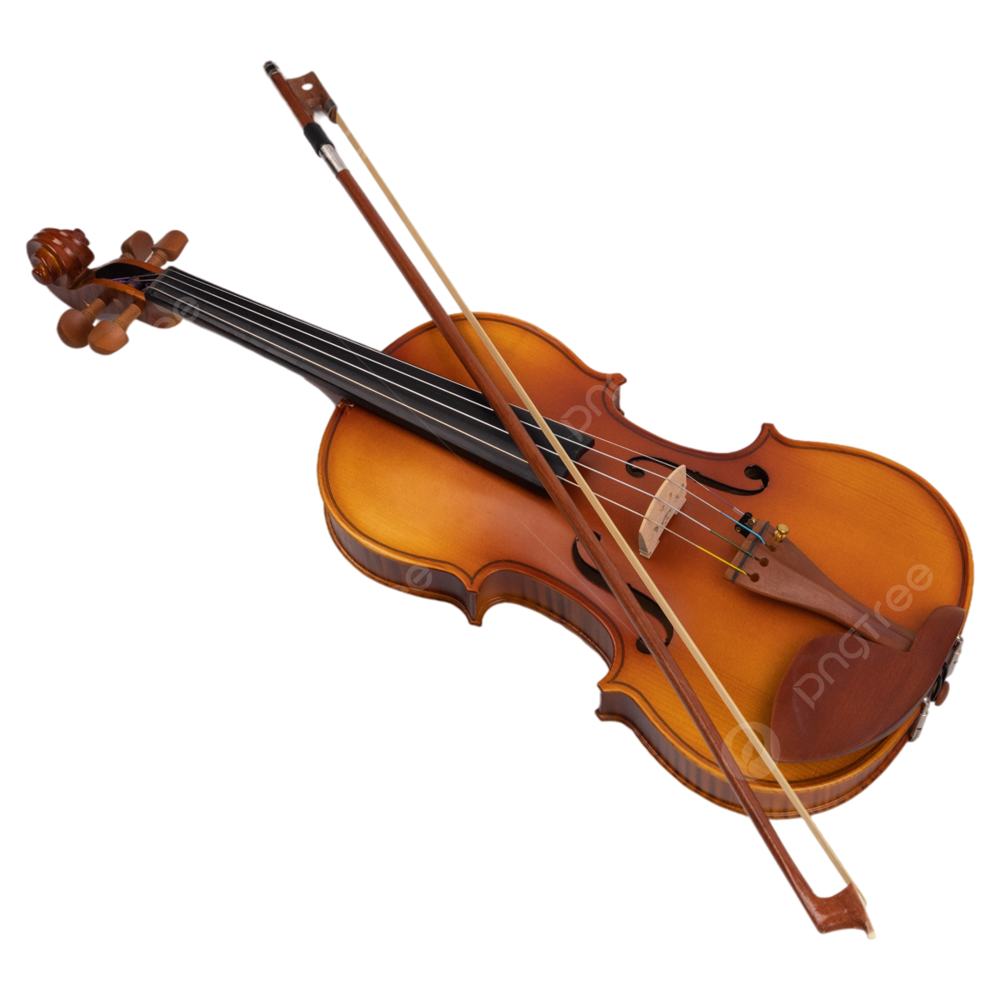

Mi vida laboral ha tenido poca trayectoria ya que me estoy centrando en estudiar, por lo tanto te voy a contar mi trayectoria escolar
En el colegio estaba en el conservatorio tocando violin hasta el tercer año, pero no continué porque hubiese preferido piano,
despúes de la ESO hice el ciclo formativo de grado medio de sistemas microínformaticos y redes en el Cristobal de monroy también,
cuando terminé hice las prácticas aquí y ha sido mi única experiencia laboral.
Por último he entrado aquí en el grado superior.
